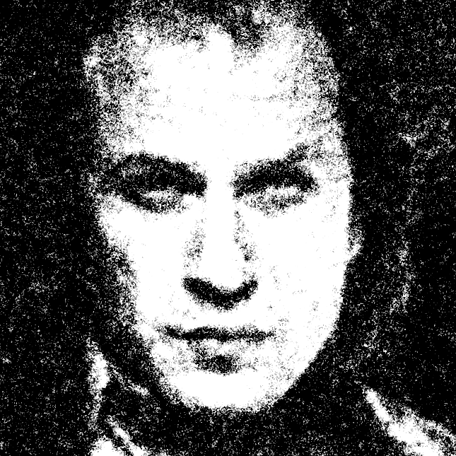
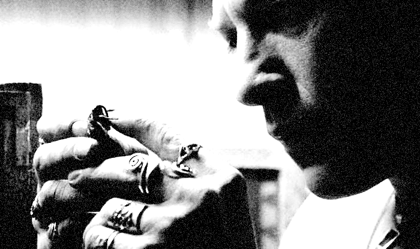
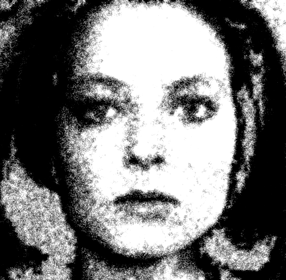
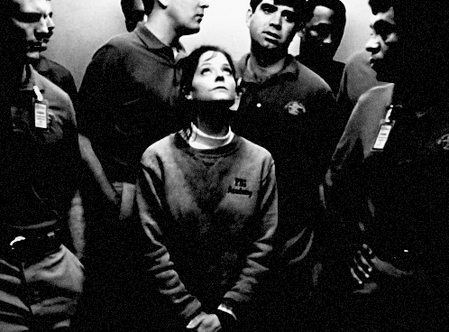
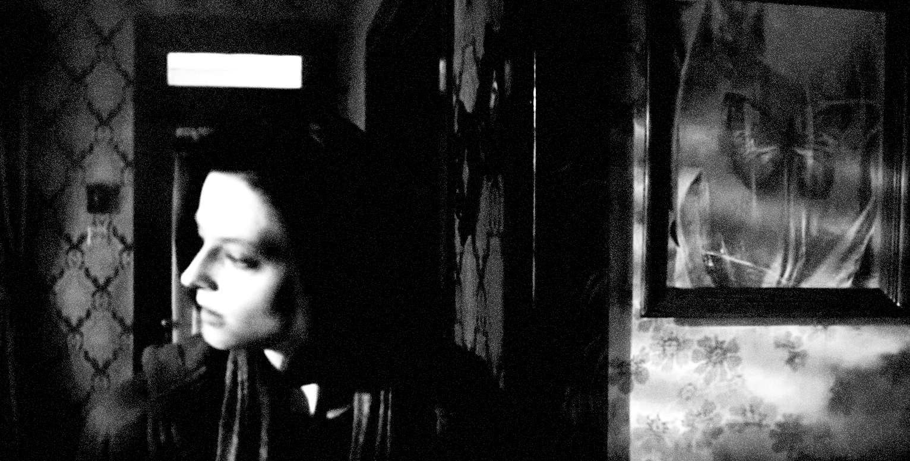

Cocoons: The flutter of liberation and the shell of destruction
< The Silence of the Lambs> is a journey toward two disparate cocoons. In the film, FBI trainee Clarice Starling and serial killer Buffalo Bill are uncannily alike in that they both dream of a metamorphosis to break through their respective traumas. The fluttering of the moth they encounter traces entirely different trajectories, signifying liberation from past horrors for one while marking the ruin of twisted desires for the other.

During the autopsy of a victim killed by the serial killer Buffalo Bill, a pupa is discovered in the victim's throat. This insect, known as the Death's-head Hawkmoth[1], serves as a direct projection of Bill's desires. Evolving from a caterpillar through a pupal stage into an adult, this moth is a creature that symbolises metamorphosis . Just as a caterpillar transforms into a moth, he seeks to become a new being through a bizarre process.

The pupa discovered in the victim's throat serves as a direct projection of Bill's desires.
According to Hannibal Lecter, Bill believes himself to be transgender despite not actually being so. This is because he believes that by completing a Woman Suit made from the skin of female victims, he will escape his current unstable existence and become perfect. At the root of this desire lies sexual trauma and abuse suffered from his mother during his childhood. In the original novel, it is mentioned that his personality and values were severely warped due to an unfortunate childhood, specifically developing castration anxiety caused by sexual violence from his mother. The horrific abuse and neglect led him to loathe his original biological self to an extreme degree. For him, womanhood is not merely a matter of gender, but a culmination of the "beauty, softness, and the state of being loved" that he could never possess. In other words, going beyond gender dysphoria[2] , he killed his former self to escape from a shattered identity caused by trauma (Childhood Trauma-induced Identity)[3] and sought to become an ideal by wearing someone else's skin.
The reason his symbol is a moth rather than a butterfly is to reflect Buffalo Bill's dark, and sinister image and his nocturnal nature. While he dreamed of being a brilliant butterfly, it reflects his reality where he could only ever be a damp, dark moth. Ultimately, he ends up facing death in a pupal state, failing to achieve complete metamorphosis by the end of the film. ⁋

In the male-dominated world of criminal investigation, Clarice Starling, a nearly sole female FBI trainee, faces routine sexism and misogyny. Even as she investigates a case, she is constantly objectified, scrutinized, and evaluated by the men around her. This transcends her position as a mere trainee, symbolizing the heavy gazes and invisible oppression that women must confront in a patriarchal society. The explicit stares and disregard poured upon her are like a rigid cocoon that stifles her. In the early stages of the film, Clarice remains in the state of a pupa that has yet to break its shell, surviving only by proving her own competence.

Clarice depicted as a small presence, trapped among towering male agents in the elevator.
What is it that Clarice seeks to achieve in the film? The ‘screams of the lambs’ she confesses to Hannibal Lecter is both the driving force of her actions and her most painful vulnerability The trauma of her father's death and the guilt of being unable to save the slaughtered lambs vibrate incessantly within her, seeking an escape. Her pursuit of Bill is both an act of saving others and a harrowing process of self-confession, in which she confronts the deep wounds within herself head-on to silence that scream.

Towards the end of the film, at the moment she terminates Bill in pitch-black darkness where nothing can be seen —relying solely on her senses—Clarice achieves a complete metamorphosis. Unlike Bill’s twisted desire to possess the skin of others, Clarice proves her true growth by rising above her own vulnerabilities and the wounds she has endured as a woman. The 'silence of the lambs' she now hears is no longer a sound of pain, but the fluttering wings of a butterfly, liberated from past oppression and soaring freely. ⁋